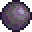

No game, os jogadores são colocados em um mundo gerado aleatoriamente, onde têm a liberdade de explorar, construir estruturas, coletar recursos, combater inimigos e descobrir tesouros. O jogo combina elementos de exploração, construção, mineração e combate, oferecendo uma ampla gama de atividades e possibilidades.
Para invocar o King Slime, você precisa encontrar um item chamado "Slime Crown". Ele pode ser criado usando uma coroa de ouro/platina e gel (obtido derrotando Slimes).
No primeiro estágio, ele flutua em direção ao jogador, tentando fazer contato físico. Ele tem 2800 pontos de vida (5600 no Expert Mode) e tem uma velocidade considerável. Uma vez que seus pontos de vida caem abaixo de 50%, ele entra no segundo estágio.
Preparação: Antes da batalha, certifique-se de ter uma boa armadura, armas e poções para aumentar seus atributos. Itens como Ironskin Potion, Regeneration Potion e Swiftness Potion são úteis.
Movimentação: Durante a batalha, mantenha-se em constante movimento para evitar ser atingido pelo Eye of Cthulhu. Usar um gancho ou asas pode ajudar na mobilidade.
Ataques à distância: Se você tiver acesso a armas à distância, como arcos ou armas de fogo, utilize-as para atacar o chefe.
Lâminas e armas corpo-a-corpo: No segundo estágio da batalha, quando o Eye of Cthulhu se torna mais rápido, armas corpo-a-corpo, como espadas e lanças, podem ser mais eficazes. Mantenha-se em movimento e desvie dos ataques.
Drops
Demonite/Crimtane Ore (dependendo da corrupção/carmim em seu mundo);
Suspicious Looking Eye (usado para convocar o chefe novamente);
Treasure Bag (apenas no Expert Mode);
Binóculos;
Shield of Cthulhu (apenas no Expert Mode).
Devorador de Mundos (Eater of Worlds)
Apontado como o segundo chefe do game, sendo necessário para progressão, caso tenha escolhido a maldade "Corruption".
Trata-se de um enorme verme que atravessa as profundezas sombrias. Possui um total de 10.050 (Clássico e Journey)/15.120 (Expert)/19.224 (Master) de saúde em todas as plataformas.
APRESENTAÇÃO
Spawn / Summon
Tradicionalmente, pode ser invocado ao quebrar três Shadow Orb, encontrados em pequenos buracos nas Corruption-Chasms, cercados por Ebonstone, o que requer uma picareta com 65% de poder de picareta ou superior para minerar, embora explosivos ou pó de purificação possam ser usados para contornar isso.

Uma vez dentro do alcance, os Shadow Orbs podem ser destruídos com um martelo ou explosivos. O Devorador de Mundos só pode ser convocado na Corrupção e pode ser convocado a qualquer hora do dia. Se conseguir escapar da Corrupção, fugirá e desaparecerá.
Armas à Distância: Armas como arcos, bestas e armas de fogo podem ser eficazes contra o Eater of Worlds. Essas armas permitem que o jogador cause dano à distância, mantendo uma distância segura do monstro.
Estrutura Defensiva: Construir uma estrutura defensiva, como uma torre ou muro, pode ajudar a proteger o jogador de ataques do Eater of Worlds. O jogador pode ficar em cima da estrutura e atirar em direção ao monstro.
Poções: O uso de poções de cura, defesa e resistência pode ser útil para aumentar a sobrevivência do jogador durante a batalha.
Para invocar o Brain of Cthulhu, você precisa quebrar três Pulsating Hearts (Corações Pulsantes) encontrados nas áreas de Crimson. Uma vez que os três corações são quebrados, o boss será convocado automaticamente.
Construa uma arena espaçosa e bem iluminada para se mover livremente durante a batalha. Adicione plataformas para facilitar a locomoção vertical;
Durante a primeira fase da luta, os braços do Skeletron vão girar rapidamente, causando dano. Concentre-se em destruir os braços primeiro para enfraquecer o chefe;
Após destruir os braços, o Skeletron entrará em sua segunda fase. Nesta fase, ele se tornará mais agressivo e rápido. Continue a atacá-lo enquanto evita seus ataques;
Mantenha-se em movimento constante para evitar os ataques do Skeletron. Use armas de longo alcance ou mágicas para atingi-lo, enquanto evita seus ataques corpo a corpo;
Clothier Voodoo Doll: Um item usado para invocar o Clothier Voodoo Doll, necessário para lutar contra o Wall of Flesh (muralha de carne);
O Skeletron pode soltar outros itens, como moedas e poções. Os drops podem variar de acordo com a versão do jogo e a plataforma em que você está jogando.